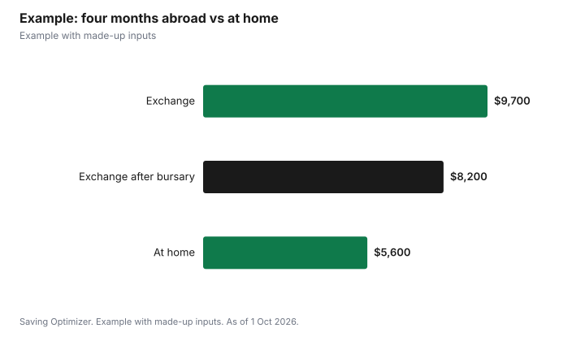

Education · Canada
Exchange Semester Abroad: What It Costs Canadian Students
On a university exchange, most Canadian students keep paying their home school's tuition, so the extra cost of a semester abroad is mainly flights, housing, travel insurance, visas and daily living in the host city. Queen's University, for example, says you continue to pay tuition to Queen's while on exchange, and Waterloo assesses tuition at Waterloo for the term. OSAP can fund an approved exchange at its standard allowances but does not cover the added costs of going abroad. Ontario students can keep OHIP while studying full time outside Canada if they meet residency rules and apply for an academic absence, but OHIP pays only limited amounts for emergencies abroad, so buy travel medical insurance. Apply for your school's exchange bursaries early.
Key takeaways
- You usually pay home tuition while on exchange, not the host school's.
- OSAP covers standard educational costs on an approved exchange, not the extra costs of travel.
- Keep OHIP: 153 days in Ontario in each of the two 12-month periods before you leave, plus an academic absence.
- OHIP pays up to $50 a day for emergency outpatient care abroad; buy travel medical insurance.
- Exchange bursaries exist at many schools; deadlines can be early.
- Example with made-up inputs: a fall semester in Europe.
Tuition and fees on exchange
| University | Tuition while on exchange | Other notes |
|---|---|---|
| Queen's University | Continue to pay tuition to Queen's | Register as a visiting student at host; Exchange Bursary available |
| University of Waterloo | Assessed at Waterloo for the term; charged for 2.5 units regardless of courses taken abroad | Pay compulsory incidental fees too |
| University of Toronto (OSAP guide) | Apply using your normal U of T program | Credits must transfer back |
Because credits transfer back to your home degree, an exchange need not add time to your program if you plan courses carefully. Queen's notes that exchange does not usually extend the length of your studies. Some host schools charge their own smaller fees, such as for insurance, residence or student services, so read the host's information for incoming exchange students.
OSAP and other student aid
The University of Toronto's OSAP exchange guide says you can receive OSAP for a U of T exchange program if you expect to receive transfer credits. OSAP will help with educational costs, meaning tuition and fees, books and supplies, and living costs at its standard allowances, but not the extra costs of going abroad. You are assessed for living away from home costs for the exchange term, even if you normally live with your parents. OSAP uses your actual exchange dates, so funding can be higher or lower than usual. You must carry at least 60% of a full-time course load, or 40% with a confirmed disability, and exchange terms count toward OSAP's limit of program length plus one year. Apply through your home school, not the host, and expect processing to take several weeks after documents are submitted.
Health coverage: OHIP and travel insurance
Ontario says you can keep OHIP while studying outside Canada if you have a valid health card, are registered in a full-time academic program, have been in Ontario for at least 153 days in each of the two 12-month periods immediately before you leave, and keep Ontario as your primary home. Before leaving, take your health card, proof of residency and proof of full-time registration abroad to a ServiceOntario centre to apply for an academic absence. Students from other provinces should check their own plan's rules.
| Service | OHIP pays up to |
|---|---|
| Doctor services | The lesser of the amount billed or Ontario fee schedule rates |
| Emergency outpatient services | $50 a day, or the amount billed if less |
| Emergency inpatient care, intensive (operating room, ICU, coronary care) | $400 a day |
| Emergency inpatient care, lower levels | $200 a day |
Hospital costs abroad can far exceed these amounts. The federal travel site says your provincial or territorial plan may cover none or only a small part of your medical costs abroad, including medical evacuation, and will never pay your bills up front. It advises students to ask their school or program administrator what insurance they need. Many host schools require proof of insurance, and some include a mandatory plan in their fees.
The extra costs to budget
- Flights: book early and check student fares; fares vary by season.
- Housing: residence at the host school or a private room; some cities are far more expensive than home.
- Visa or study permit fees, if the host country requires one.
- Travel medical insurance, unless your host school's plan or a family plan covers you; read exclusions.
- Phone: a local SIM or travel eSIM can cost less than roaming.
- Daily living and weekend travel, which is where budgets usually slip.
- Rent at home if you keep a lease you cannot sublet.
Bursaries and funding
Many universities offer exchange bursaries or awards. Queen's has an Exchange Bursary open to domestic and international students, and Waterloo lists international experience awards. Deadlines are often months before departure, so apply when you apply for exchange. Ask your financial aid office whether exchange awards affect your OSAP assessment.
Example with made-up inputs
These numbers are an example with made-up inputs. Jamie, an Ontario student, plans a fall exchange in Europe. Home tuition is the same as any term. Extra costs: a $1,300 return flight, four months of housing at $900, $3,600, travel medical insurance at $350, a $150 visa fee and $300 for a phone plan, $5,700. Daily living and travel at $1,000 a month adds $4,000, for $9,700, against $5,600 for four months at home including $3,600 rent. The net extra cost is about $4,100, and a $1,500 exchange bursary brings it to about $2,600.
| Cost | Exchange | At home |
|---|---|---|
| Flight, visa, insurance, phone | $2,100 | $0 |
| Housing | $3,600 | $3,600 |
| Living and travel | $4,000 | $2,000 |
| Total | $9,700 | $5,600 |
| After $1,500 bursary | $8,200 | $5,600 |

Steps
- Choose host schools with courses that transfer back.
- Apply for exchange bursaries at the same time.
- Update your OSAP application with exchange dates and documents.
- Apply for an OHIP academic absence before you leave.
- Buy travel medical insurance or confirm the host plan.
- Build a monthly budget for the host city.
Common mistakes
- Assuming OHIP alone covers you abroad.
- Forgetting that OSAP does not fund flights.
- Taking a course load below OSAP's minimum.
- Missing bursary deadlines.
- Not subletting housing at home.
Related: out-of-province travel insurance and OSAP 2026-27.
Sources
- Queen's University International Programs Office, How the Exchange Process Works, queensu.ca, as of 1 Oct 2026.
- University of Waterloo, Tuition, payments, and financial aid (International Experience), uwaterloo.ca, as of 1 Oct 2026.
- University of Toronto Learning Abroad, OSAP for Student Exchange (PDF), learningabroad.utoronto.ca, as of 1 Oct 2026.
- Government of Ontario, OHIP coverage while outside Canada, ontario.ca, as of 1 Oct 2026.
- Government of Canada, Trip interruption and travel health insurance, travel.gc.ca, as of 1 Oct 2026.
- Costs in the example are made-up inputs.
Frequently asked questions
Do you pay tuition to the host school on exchange?
Usually not. Queen's says students keep paying Queen's tuition, and Waterloo assesses tuition at Waterloo for the exchange term.
Can I get OSAP for an exchange semester?
Yes, for an approved exchange with transfer credits, according to U of T's OSAP guide. OSAP covers standard educational costs, not the extra costs of going abroad.
Does OHIP cover me while studying abroad?
You can keep OHIP if you study full time abroad, spent at least 153 days in Ontario in each of the two prior 12-month periods, keep Ontario as home and apply for an academic absence.
How much does OHIP pay for emergencies abroad?
Up to $50 a day for emergency outpatient care and up to $400 a day for intensive inpatient care, or $200 for lower levels.
Do I need travel insurance for an exchange?
Ontario recommends travel medical insurance, and travel.gc.ca says provincial plans may cover little or nothing abroad.
What course load does OSAP require on exchange?
At least 60% of a full-time load, or 40% with a confirmed disability.
Researched and drafted with AI assistance and fact-checked against official Canadian sources. How we create content.
Disclosure: Saving Optimizer may earn a commission if a partner link is added later. No partnership is claimed on this page. Education only.